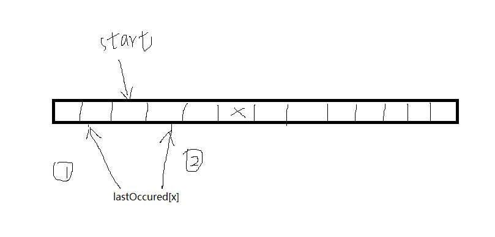

leetcode地址：https://leetcode-cn.com/problems/longest-substring-without-repeating-characters/
题目描述：
给定一个字符串，请你找出其中不含有重复字符的 最长子串 的长度。
示例：
输入: "abcabcbb"
输出: 3 解决思路：
使用map lastOccured[byte]int 记录字符和字符最后出现的下标
对于字符串每个字符x：
1.lastOccured[x]不存在 或者 小于start时不做操作。
2.lastOccured[x]>=start 时，start = lastOccured[x]+1。
3.每次都要更新lastOccured[x],更新最大长度maxLength。

代码如下：
func lengthOfLongestSubstring(s string) int {
lastOccured := make(map[byte]int)
start := 0
maxLength := 0
for i, ch := range []byte(s){
if num, ok := lastOccured[ch]; ok&& num >= start{
start = num + 1
}
if i-start+1 > maxLength{
maxLength = i-start+1
}
lastOccured[ch] = i
}
return maxLength
}